OverTheWire: Bandit 15 → 19:
Bandit Level 15 → 16:
Level Goal: The password for the next level can be retrieved by submitting the password of
the current level to port 30001 on localhost using SSL encryption.
Writeup:
Establish a connection to the bandit15 machine. According to the level goal, we need to establish an
SSL connection to the localhost on port 30001. Read the manual for openssl with the command, "man
openssl".
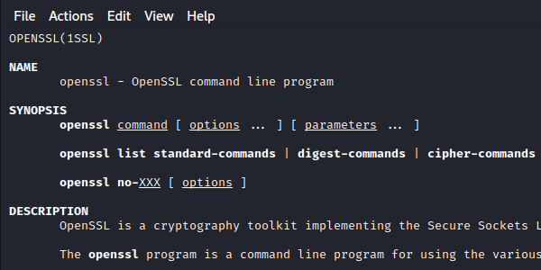
Following the shown syntax, establish an SSL connection through the command, "openssl s_client localhost:30001". With this command, we establish a secure SSL connection with "s_client" that instructs openssl to act as a client and initiate a connection to a remote server. "Localhost" is the server address we wish to connect to and "30001" is the port.
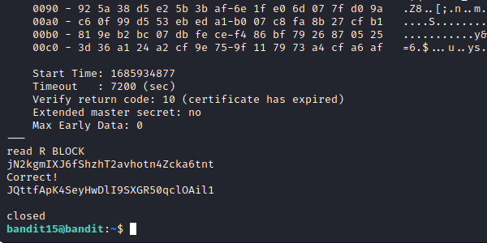
Like in the last challenge, we need to paste and enter the password to this current level for the next level's password.
Bandit Level 16 → 17:
Level Goal: The credentials for the next level can be retrieved by submitting the password of
the current level to a port on localhost in the range 31000 to 32000. First find out which of these
ports have a server listening on them. Then find out which of those speak SSL and which don’t. There
is only 1 server that will give the next credentials, the others will simply send back to you
whatever you send to it.
Writeup: SSH into server bandit16, this time, we need to scan ports 31000 to 32000 to find
out which ports in this range has a server listening on them. To do this, we can use nmap. Using the
command "nmap localhost -p 31000-32000", we can scan the localhost from the given range to see which
server will ping back.
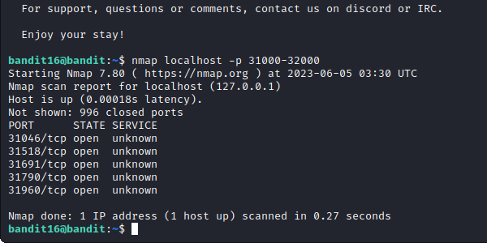
Next, as the level goal suggests, we need to find out which of these servers speaks SSL and which don't. Once again, use openssl to establish a connection with localhost on each port until one responds. Use the command "openssl s_client localhost:(port)".
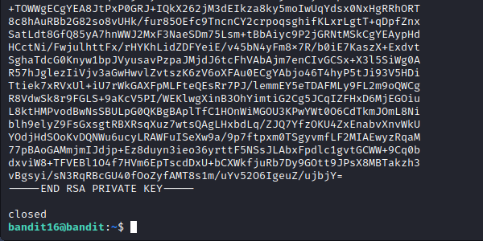
Once we have established connection to the correct port, we are given an RSA private key. This is most likely our encrypted password. We can use it to log into the next level. Exit the machine, create a text file with the copied RSA text. Use the command "nano key.txt", we can use this file to log into our next machine.
Using the command "ssh bandit17@bandit.labs.overthewire.org -i key.txt -p 2220" we can attempt to connect to the server with the key in our text file on port 2220. Upon doing so we get an error that states, "It is required that your private key files are NOT accessible by others."
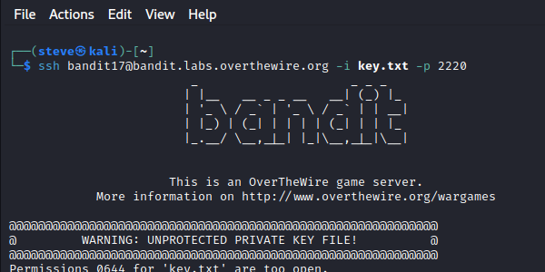
Doing some research into the chmod command, we can use the code 700 so only the owner can read, write to, or execute the text file. Use the command, "chmod 700 key.txt" to change its permissions. Now again, try to establish a new ssh connection with our file.
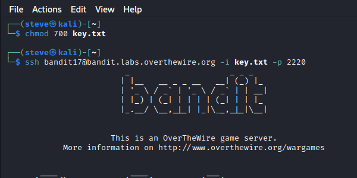
Bandit Level 17 → 18:
Level Goal: There are 2 files in the homedirectory: passwords.old and passwords.new. The
password for the next level is in passwords.new and is the only line that has been changed between
passwords.old and passwords.new
Writeup: As stated in the level goal, we have two files in the home directory. Since our
password is the only differing string in both passwords.new and passwords.old we need to somehow
find this difference.
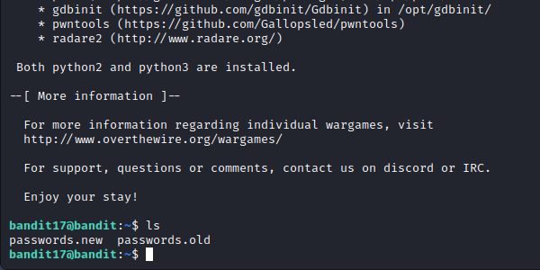
Upon further research, we can use the "diff" command to compare both text files. Use the command "diff passwords.new passwords.old".
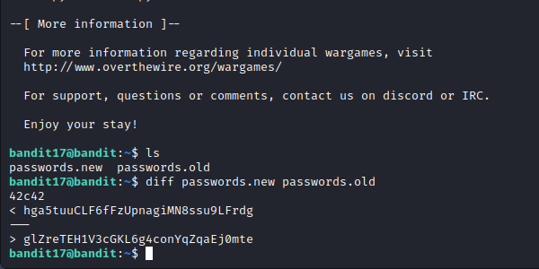
Since passwords.new was our first parameter, our password is the first line of output.
Bandit Level 18 → 19:
Level Goal: The password for the next level is stored in a file readme in the homedirectory.
Unfortunately, someone has modified .bashrc to log you out when you log in with SSH.
Writeup: As stated in the level goal, when trying to ssh into bandit18, we are immediately
logged out. Looking up the ".bashrc" file, it is a script that is executed when a user logs into a
server.
To my knowledge, we can't modify the .bashrc file in this situation. We need to somehow read the
readme file in the home directory. Looking at the ssh manual, notice that we can actually execute a
command in the remote host instead of the current shell (unlike the pipe).
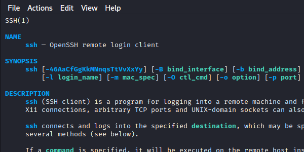
This time, when typing the ssh command, append the "cat readme" command to concatenate the readme file in the home directory.
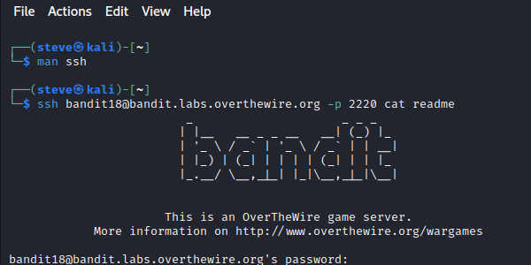
Bandit Level 19 → 20:
Level Goal: To gain access to the next level, you should use the setuid binary in the
homedirectory. Execute it without arguments to find out how to use it. The password for this level
can be found in the usual place (/etc/bandit_pass), after you have used the setuid binary.
Writeup: After successful connection to bandit19, "ls" to see a file called "bandit20-do".
For more information on the file, use the "file bandit20-do" command. We see the file is a setuid
executable. Execute the file with "./bandit20-do" and we are shown that we can run a command as
another use with the file.
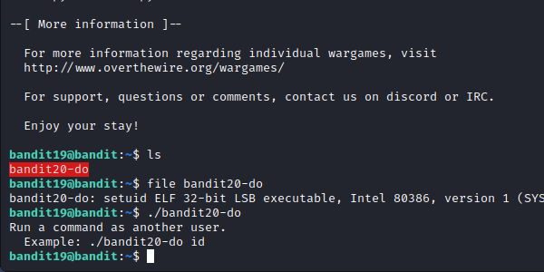
Knowing that the password is located in the directory, /etc/bandit_pass/bandit20, we can cat the bandit20 password with the executable. Use the command "./bandit20-do cat /etc/bandit_pass/bandit20" which gives us our next password.
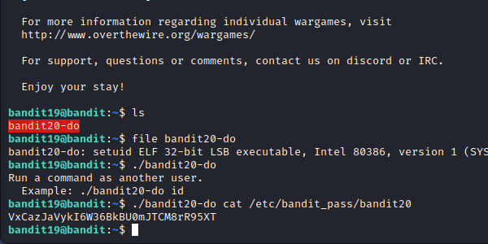